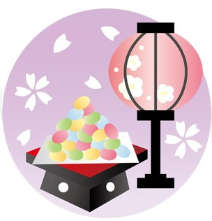
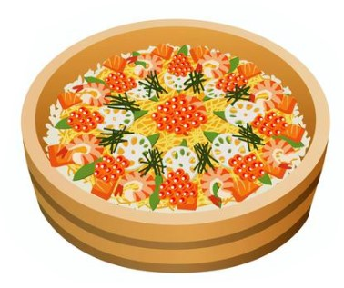
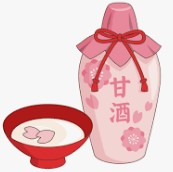

Hinamatsuri (3/3)
Other than erecting a doll altar and decorating it with sprigs of peach blossoms, Hinamatsuri is commonly celebrated by holding parties for children in the days leading up to March 3rd.
- It has become a festival known for the exciting range of traditional food served, including:
- Hina-arare – Sugary, pastel-colored rice crackers only available during the Hina Matsuri season
- Chirashi-zushi – Slightly sweetened sushi served alongside clam soupp
- Hishimochi – Rice cakes in a rhomboid shape traditionally symbolic of fertility, which come in 3 colors, either white to symbolise snow, pinkish-red to symbolise peach blossoms, or green to represent the coming spring.
- Amazake – Reflecting the family-orientated nature of the festival, the typical drink served during Hinamatsuri is amazake, a non-alcoholic sake.



